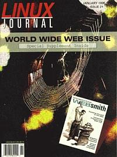

Shutdown Archive web server
Search:
Linux Journal
Issue #21/January 1996

Features
An Introduction to Python
by Jeff Bauer
Do you need help in the rapid development of applications? Jeff explains why Python could be the language for you.
Using Linux and DOS Together
by Marty Leisner
Taking the pain out of installing Linux on a machine for the first time.
News and Articles
CVS: Version Control Beyond RCS
by Tom Morse
Ever have conflicts when more than one person works on the same file? CVS offers a solution.
The Quintessential Linux Benchmark
by William van Dorst
All about the “BogoMips” number displayed when Linux boots.
Columns
From the Publisher
WEBsmith
Letters to the Editor
From the Editor
Linux Systems Administration
Maximizing Linux Security, Part I
New Products
Take Command
The chmod Command
Kernel Korner
Linux on Alpha AXP
Book Review
Linux Universe
Directories & References
Upcoming Events
Consultants Directory
Archive Index
Shutdown Archive web server
Search:
Copyright © 1994 - 2018
Linux Journal
. All rights reserved.